Cook your rice in your rice cooker. Most packages of nori have instructions for seasoning.
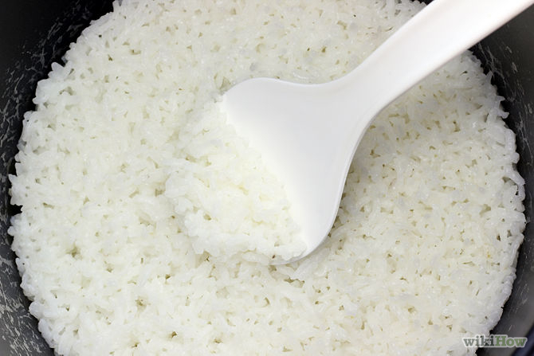Chop and prepare your vegetables and fish.
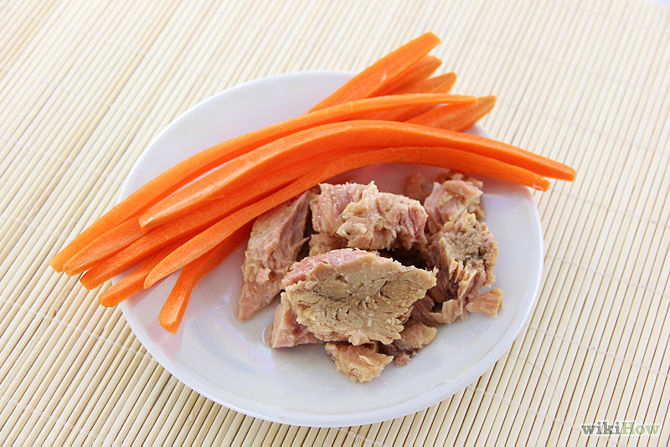Put the nori on the bamboo mat shiny side down.
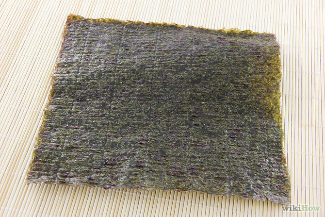Remove the rice from the rice cooker and put it into a bowl.
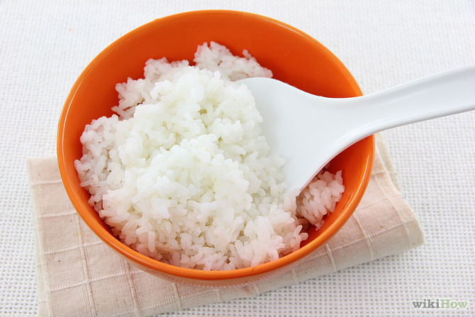Add seasoned rice vinegar to moisten the rice (but not too wet).
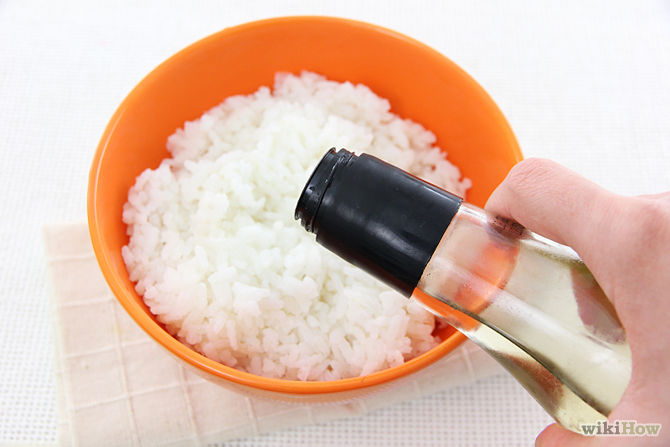Wet your hands, then spread the rice on the nori leaving about an inch of nori without rice at the top.
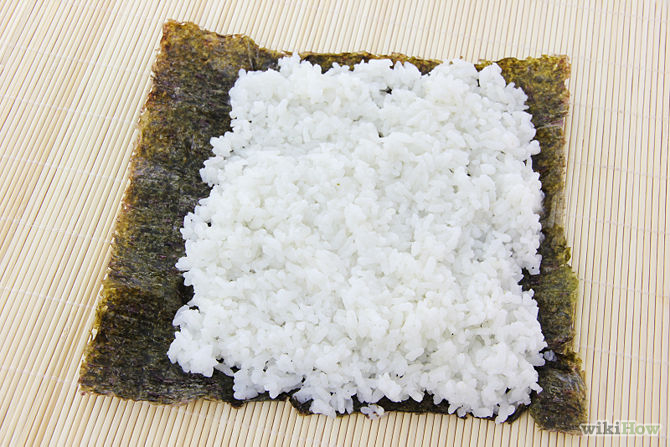With your thumb make a line in the middle of rice.
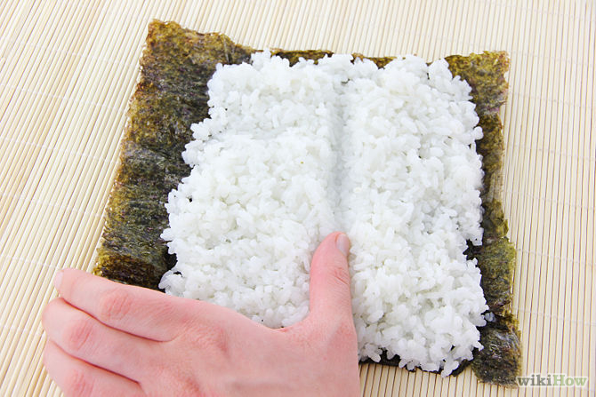Fill in the gap with your chosen ingredients.
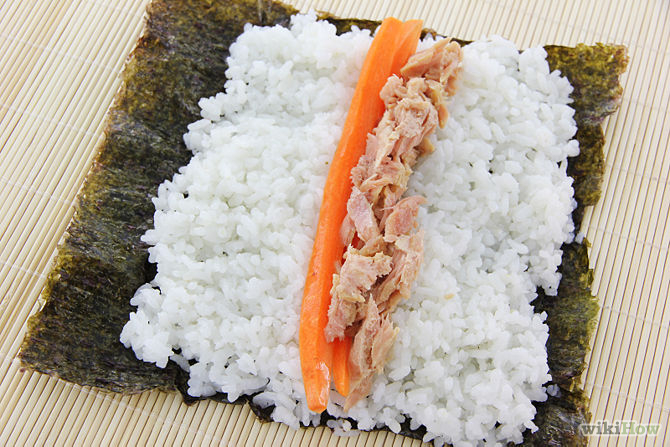Roll the sushi with the bamboo mat.
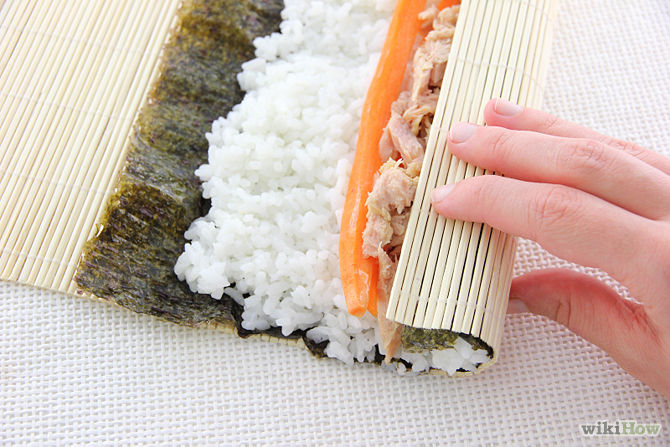Wet your knife then cut the roll into the desired size.
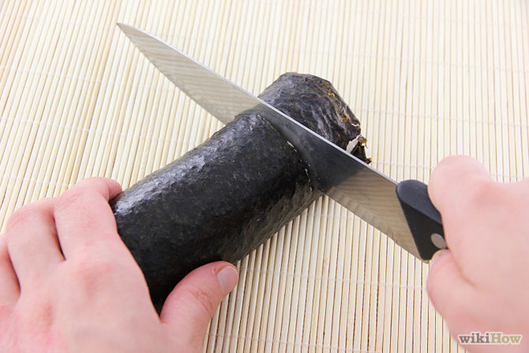Enjoy!
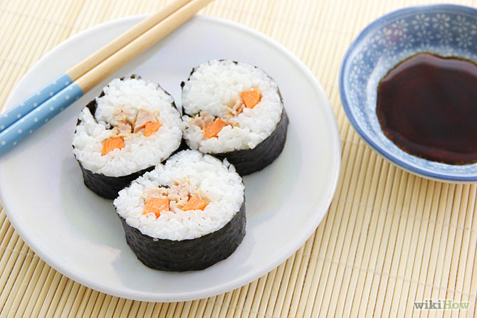